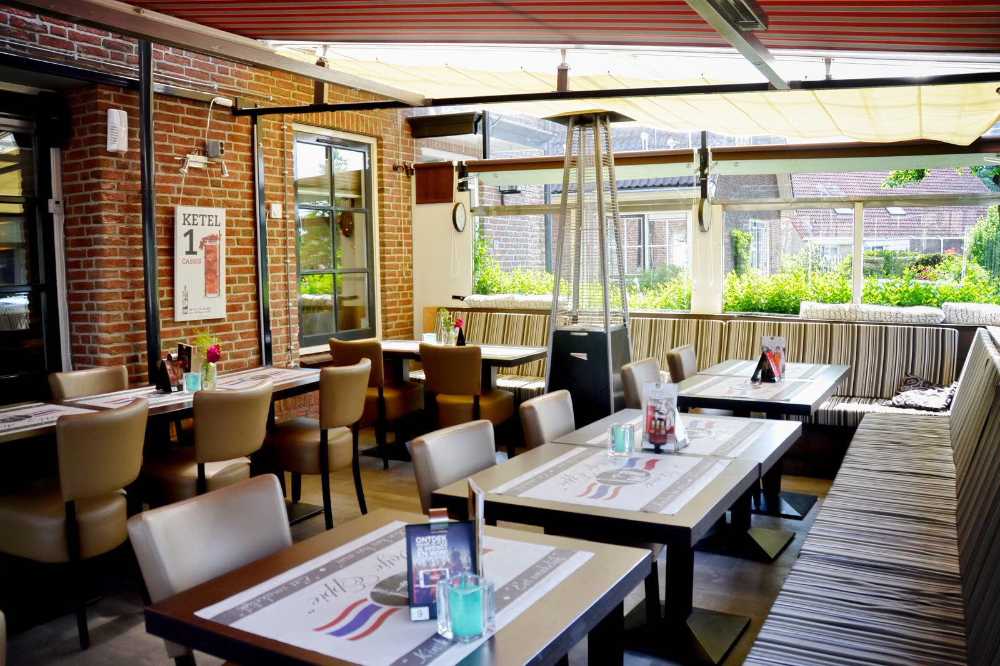

Van kruidenierswinkeltje naar eetcafé
De naam Ootje Eppie komt van Oma Eppie, die vroeger een kruidenierswinkeltje op Eemdijk had. Ootje Eppie is ook de overgrootmoeder van gastheer Jan Hartog, geboren en getogen in Eemdijk.
Het Thaise karakter komt van gastvrouw Sopha Hartog-Phonla, afkomstig uit het mooie Thailand met zijn heerlijke Thaise keuken. Zo staan hier de groene curry en de slibtong gewoon naast elkaar op de kaart.
De gezellige inrichting zorgt voor een huiselijke sfeer: prima voor een avondje uit eten of een uitgebreide lunch.
Thaise keukenSoepen, curry's, wok en huisgemaakte loempia's
Hollandse keukenSlibtong, spareribs, saté en de vertrouwde snacks
